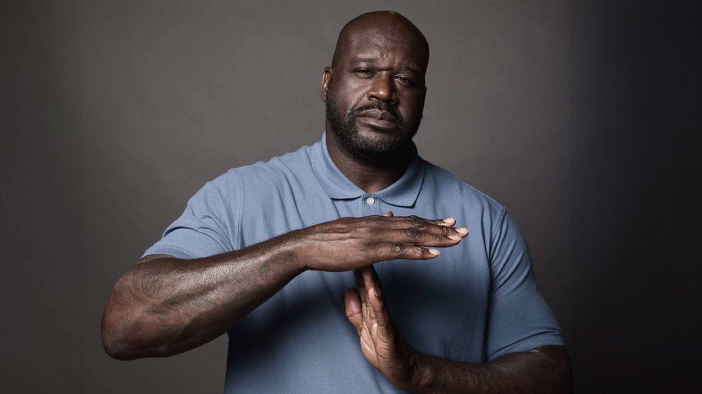

Le Karmine Déchaîné marque une pause : retour aux sources
Après réflexion, nous avons pris une décision que nous souhaitions vous communiquer avec la transparence qui nous est chère : le Karmine Déchaîné suspend temporairement ses activités.

Depuis quelques temps, les couloirs de la rédaction sont plus silencieux qu'à l'ordinaire. Après réflexion, nous avons pris une décision que nous souhaitions vous communiquer avec la transparence qui nous est chère : le Karmine Déchaîné suspend temporairement ses activités.
Pourquoi cette pause ?
Depuis la reprise, force est de constater que le rythme des événements à Karminéa a considérablement ralenti. Un journal vit de l'actualité, et lorsque l'actualité se fait rare, il devient difficile de remplir nos colonnes avec la qualité et l'honnêteté que vous méritez. Plutôt que de publier pour publier, nous avons préféré prendre du recul.
Mais au-delà du manque d'événements, c'est une envie plus profonde qui nous a animés : développer notre propre récit, notre propre histoire, sans dépendre de celle des autres. Nous avons réalisé que notre identité journalistique méritait de s'ancrer dans quelque chose de plus solide et de plus personnel.
Le retour au Nord
C'est donc vers le Nord que nous retournons — vers le 59, nos terres, nos racines. Un retour aux sources, au sens le plus littéral du terme. C'est là que nous allons construire, développer et faire grandir notre propre RP, à notre rythme et selon notre vision.
Un au revoir, pas un adieu
Cette pause ne signifie pas la fin du Karmine Déchaîné. Le journal existe, ses archives demeurent, et la flamme reste allumée. Si l'actualité de Karminéa reprend de plus belle, si nos chemins nous y ramènent, nous serons là.
En attendant, nous remercions chaleureusement tous les citoyens de Karminéa qui nous ont lus, soutenus et encouragés. Ce fut une belle aventure, riche en émotions et en histoires mémorables.
"Un bon journaliste sait quand écrire. Un grand journaliste sait aussi quand s'arrêter."
— La Rédaction du Karmine Déchaîné